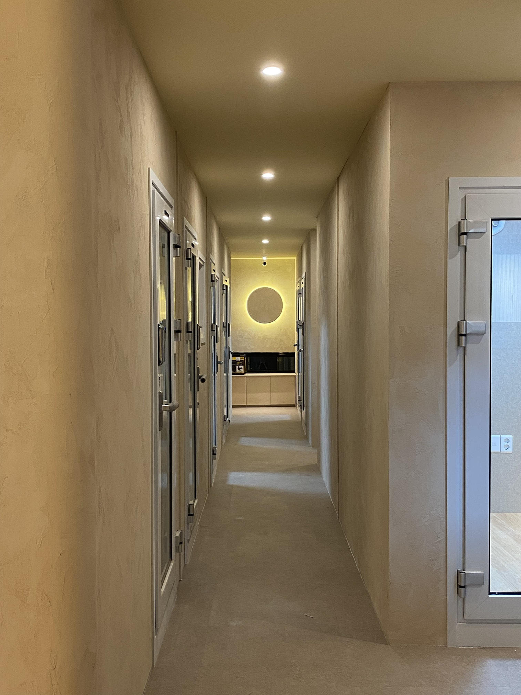

ENOCH MUSIC ACADEMYENOCH NOTE — AFTER THE STAGE

After the Stage
끝난 뒤에 하는,
연습
그날의 무대를 돌아보는 일에 대하여
끝난 뒤에 하는 연습01 / 08
ENOCH MUSIC ACADEMYWHATEVER THE RESULT
Whatever the Result
그날의 무대는,
한 번뿐이었습니다
결과는 이미 정해졌어요.
하지만 그날을 어떻게 기억할지는, 아직 내가 정할 수 있습니다.
어떤 결과였든, 돌아볼 가치가 있는 무대였거든요.
끝난 뒤에 하는 연습02 / 08
ENOCH MUSIC ACADEMYNOT TO BLAME
Not to Blame
복기는,
나를 혼내는 시간이 아닙니다
잘못한 것만 세면, 다음 무대가 더 무거워져요.
이해하고 나면, 같은 순간이 와도 덜 흔들립니다.
끝난 뒤에 하는 연습03 / 08
ENOCH MUSIC ACADEMYTHREE QUESTIONS
Three Questions
나에게 묻는,
세 가지
01그날 가장 떨렸던 순간은?
02그래도 해낸 것 하나는?
03다음 무대의 나에게 해 주고 싶은 말은?
끝난 뒤에 하는 연습04 / 08
ENOCH MUSIC ACADEMYSTART WITH WHAT WENT WELL
I did it.
끝까지 연주했다 · 대기실을 버텼다
시험장 문을 열고 들어갔다
Start with What Went Well
해낸 것부터,
적어 보세요
사람은 아쉬운 장면을 더 오래 기억해요.
그래서 일부러, 해낸 것부터 꺼내 봅니다.
끝난 뒤에 하는 연습05 / 08
ENOCH MUSIC ACADEMYTAKE YOUR TIME
Take Your Time
바로 돌아보지 않아도,
괜찮습니다
마음이 조금 가라앉았을 때 적어도 늦지 않아요.
쉬는 것도, 다음 무대를 위한 시간이거든요.
끝난 뒤에 하는 연습06 / 08
ENOCH MUSIC ACADEMYWHAT COMES NEXT
What Comes Next
돌아보는 이유는,
앞으로 가기 위해서입니다
그날은 이미 지나갔지만, 다음 무대는 아직 오지 않았어요.
적어 둔 한 줄이, 다음 연습의 첫 줄이 됩니다.
다음 무대를 만드는 건,
그날의 결과가 아니라 오늘의 선택입니다.
끝난 뒤에 하는 연습07 / 08
ENOCH MUSIC ACADEMYTHE ENOCH WAY
ENOCH
끝난 자리에서,
다시 시작합니다.
진도보다 이해를 먼저 봅니다.
나만의 진짜 소리를 찾는 곳.
에녹실용음악학원 시흥점
경기도 시흥시 은행로 157 2층010 3949 3666
Vocal · Guitar · Drum · Bass · Piano · MIDI · 작곡
끝난 뒤에 하는 연습08 / 08